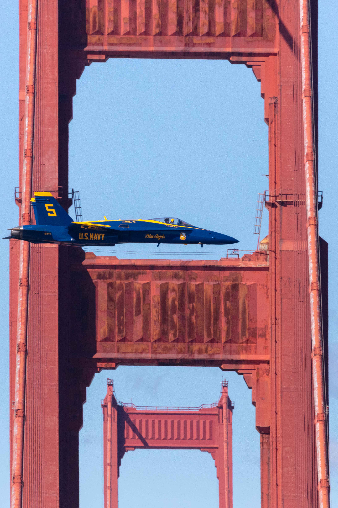

About the Series
Thirty-Six Views of Mount Fuji
Katsushika Hokusai · 1830–1832
In 1830, the Japanese artist Hokusai created one of the most influential artistic series — Thirty-Six Views of Mount Fuji. The series depicted Japan's sacred peak across an extraordinary range of seasons, distances, weather conditions, and human circumstances: farmers, merchants, fishermen, pilgrims, and travelers all captured going about their lives with Mt. Fuji as the one constant, "the eternal companion". Rather than a portrait of the mountain itself, the series was a portrait of the civilization living in its shadow — and the mountain is the silent witness to all of it.

The most famous image from the series — The Great Wave off Kanagawa — shows Mount Fuji reduced to a tiny, calm triangle beneath a towering, clawing wave, with fishermen struggling below. It remains one of the most reproduced works of art in history.
Thirty-Six Views of the Eiffel Tower
Henri Rivière · 1888–1902
Half a century later, the French artist Henri Rivière looked at Hokusai's series and found inspiration. Between 1888 and 1902, Rivière produced his own Thirty-Six Views of the Eiffel Tower. He captured the tower through fog and sunshine, at dusk and dawn, glimpsed between Haussmann buildings, reflected in the Seine, looming behind working-class neighborhoods, and peering over the rooftops of Montmartre. Like Hokusai, he made the tower a backdrop to human life — a new landmark becoming inseparable from the identity of its city and its people.

Thirty-Six Views of the Golden Gate Bridge
Brad Miller · 2016–2025
This series follows in the footsteps of Hokusai and Rivière, carrying forward a tradition now nearly two centuries old: a single landmark, thirty-six encounters, and the full, messy, beautiful breadth of life surrounding it. The Golden Gate Bridge serves as the third great subject in this lineage of artistic series, each rooted in a specific place and people. This series is not about the bridge. It is about the lives, moments, and worlds that exist in its orbit. The bridge is the constant looming over the vast variety of life.
In attempting to become the third artistic series to capture the culture and life of an era through the lens of a single monumental landmark, 36 Views of the Golden Gate Bridge asks: what will our time look like to those who come after? What does this bridge witness, every day, that we have stopped noticing?
